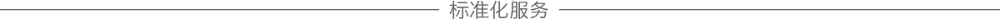

- 私人专享定制化服务，为您的健康量体裁衣
- 飞机公务舱、全程别克商务车，尊享之旅一路同行
全程别克商务车用车服务，5年服务还包含杭州往返公务舱机票，让您的尊享之旅从登上飞机的一刻美好开启。
3年个性化“细胞银行”抗衰老方案
【人民币 33 万】{每次疗程的时间根据客户身体情况而定}
健康服务项目阶段一：
1主任医师治疗前问诊（包括核实身体调查表、既往病史、家庭病史、外科手术史等）；
2、每年一次常规身体检查（便于对比治疗前治疗后身体各项指标的改变情况）；
A、身体一般检查（血压测量、超声波检查、心电图等）；
B、血液采样（血液检测将分析近60种生命指标、肿瘤标志物等）；
C、大小便采样检测；
D、衰老专项检查（衰老专项检查、性激素水平检测、心率变异检测、微量元素检测、细胞活性检测）；
E、全景牙齿X 光检查等；
3、专业护理人员将提取客户150ml血液进行全免疫细胞分离与储存，并针对客户当年体检结果有针对性的对NK细胞进行扩增与培养；
4、基因检测（衰老、肿瘤风险监测）。
健康服务项目阶段二：
1、根据客户当年体检结果有针对性的补充身体所缺乏的微量元素及矿物质；
2、根据客户当年体检结果单独定制NK细胞制备方案与抗衰老回输方案；
3、自体全免疫细胞免费存于“中赢生命方舟细胞银行”6年，为项目服务到期之后的后续计划提供年轻健康时的细胞；
4、提供私人医生管家式服务，3年内任何关于健康、饮食、运动、抗衰老相关的问题可拨打贵宾热线，中赢将为您提供专业的医疗咨询及专家预约服务。
行程服务：
1、治疗期间医院周边五星级酒店住宿
2、治疗期间酒店医院全程专车服务
3、治疗期间全程私人管家服务
5年个性化“细胞银行”抗衰老方案
【人民币 55 万】{每次疗程的时间根据客户身体情况而定}
健康服务项目阶段一：
1、知名专家治疗前问诊（包括核实身体调查表、既往病史、家庭病史、外科手术史等）；
2、每年一次常规身体检查（便于对比治疗前治疗后身体各项指标的改变情况）；
A、身体一般检查（血压测量、超声波检查、心电图等）；
B、血液采样（血液检测将分析近80种生命指标、肿瘤标志物等）；
C、大小便采样检测；
D、衰老专项检查（性激素水平检测、心率变异检测、微量元素检测、细胞活性检测）；
E、全景牙齿X 光检查等；
3、专业护理人员将提取客户200ml血液进行全免疫细胞分离与储存，并针对客户当年体检结果有针对性的对NK细胞进行扩增与培养；
4、全球最为先进的PET CT全身防癌专项检测；
5、基因检测（衰老、肿瘤风险监测、重大疾病易感基因监测）。
健康服务项目阶段二：
1、根据客户当年体检结果有针对性的补充身体所缺乏的微量元素及矿物质；
2、根据客户当年体检结果单独定制NK细胞制备方案与抗衰老回输方案；
3、自体全免疫细胞免费存于“中赢生命方舟细胞银行”8年，为项目服务到期之后的后续计划提供年轻健康时的细胞；
4、提供私人医生管家式服务，5年内任何关于健康、饮食、运动、抗衰老相关的问题可拨打贵宾热线，中赢将为您提供专业的医疗咨询及专家预约服务。
行程服务：
1、治疗期间医院周边五星级酒店住宿 2、治疗期间全程豪华专车服务
3、治疗期间全程私人管家服务 4、治疗期间杭州往返公务舱机票

- 符合大多数人的科学标准化服务，省去繁琐，仅需四步
采血→扩增NK细胞→储存→回输NK细胞
根据产品不同提供一次性采血
国际GMP标准实验室同步扩增所需的全部NK细胞
将扩增的NK细胞储存到-196℃的液氮柜中储存
根据产品不同回输NK细胞，每次回输3天，不含体检，整个治疗在尊享馆完成。
5年标准化NK细胞抗衰老方案
人民币：30.6万（一次性抽取客户血液200ML，并一次性扩增5年所需的全部NK细胞。将扩增的NK细胞储存5年，分7个疗程回输。每个疗程回输3天，不含体检，整个治疗在尊享馆完成。该方案NK细胞的纯度、杀伤性、单次治疗回输NK细胞数量均按照标准值执行，不会因人而异）
10年标准化NK细胞抗衰老方案
人民币：52万 (一次性抽取客户血液200ML并一次性扩增10年所需的全部NK细胞。将扩增的NK细胞储存10年，分15个疗程回输。每次回输3天，不含体检，整个治疗在尊享馆完成。该方案NK细胞的纯度、杀伤性、单次治疗回输NK细胞数量均按照标准值执行，不会因人而异）